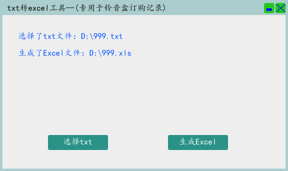

测试了下ShareSdk，感觉还是很难用，太繁琐了，回头试试其它的分享sdk吧。 (8-26)
手机后盖坏了，老是掉，淘宝上一查要30多块钱，灵机一动买了两个保护壳，才9块9。嘿嘿，好聪明也。 (8-25)
以前做的一个专用于公司包月订购记录txt文件转化为excel的小工具。 近段越来越有用了。(8-25)

有空了尝试增加一种微博图片的打开方式：一开始显示小图，点击后放开为大图窗口，右上角有关闭按钮。 (8-25)
友盟自动更新在神奇魔块上测试成功了。 (8-25)

下班后去岗顶木屋烧烤，排队两小时，吃了三个小时。和七华并其家属。 (8-24)
周日，来公司试验了下友盟的自动更新。在神奇魔块上面试验。 (8-23)
周六，下午去了赤岗哈艺旁边的k-party。 (8-22)
尝试把音乐地盘这个android包反编译过来，改造为可运行的程序。 (8-21)
下午跟同事扯淡的时候一下意识到，广东的士多店，士多原来是store的中文发音。 (8-20)
今天是七夕。中午跟几个同事去时尚天河吃的。晚上一个人去下个了东北馆子。 (8-20)
今天给我们做外包音乐app的开发方反映，做开发的同学因为连续加班几天，高血压犯了住院了，哎，开发者赚点钱不容易呀。 (8-20)
咪咕音乐的新sdk，用深圳的忍者英雄终于加固并测试订购成功了。 (8-20)
吃完饭后又停电了。就拿了两本书去了新一佳广场，看了一会。 (8-19)
今天不冷静，上午开会跟老板争吵了。最近工作真的很烦躁，事情千头万绪的。(8-18)
下班后去沃尔玛买了个猪肉香菇灌汤水饺和一份猪头肉饱餐了一顿，吃完感觉不太舒服，灌汤饺子以后不能吃了。(8-17)
晚上11点回去到万有引力网吧，看了曼城vs切尔西，3：0完胜。耶。(8-16)
今天办了世纪佳缘的钻石会员298元。咬咬牙这钱还是花吧，哎，太对不起父母了。(8-16)
今天周日来公司加班刚才中午饭去家乐源吃看到个苗条女生穿红色碎花连衣裙好漂亮如果是我老婆就好了。(8-16)
中午饭炒了个土豆，下午三到五点半赤岗打球，打完一起吃了东北饺子馆。然后和603一起去了公司看了恒大vs申花，最后2比2平了，
搞不好又要让出榜首咯。(8-15)
就咪咕sdk更新的事情，跟上海方面沟通了一整天，打了很多电话，最终还是弄不成，对方不愿意做了。
现在准备改用别的游戏来集成和报备，这样也好，一步到位，直接把下行内容改为新游戏的了。经过这两天
跟很多人的沟通协调，感觉自己办事能力增强了。(8-14)
加班完看了下比赛，恒大客场对舜天，狂轰乱炸了92分钟，在最后一分钟高拉特绝杀！恒大重登榜首！，耶。(8-12)
音乐基地的sdk要更新！通用级和企业级都要统一为一个sdk，这变动很大，感觉会影响到我们的包月推广。
整个人一下就不好了。又要找上海方面沟通集成新sdk了。。(8-12)
今天在孔夫子上买的五本书到了：《史玉柱自述、周鸿祎自述、陈忠和自述、长治长治、拐点》。(8-12)
上午准备了一份忍者英雄的报备文档给到音乐基地，下午处理了下包月订购里对投诉用户号码的屏蔽。(8-12)
晚上去越秀山看了广州富力vs长春亚泰，结果2：2。(8-11)
这几天在忙咪咕基地包月代码在其他应用的报备和新的音乐应用的开发协调。(8-10)
中午走去体育西路G口华夏银行补办了张银行卡那个柜台服务员叫熊小燕的蛮漂亮的。(8-10)
人生第一次用面膜，同事送的，竟然，面膜还有黑色的。(8-9)
我应该变的小气些，出去吃饭啥的不要总是抢着买单。(8-9)
这两天打球感觉到，网前球，还是要柔和些，动作轻柔些，运用手腕抖动，效果更好。(8-9)
8月8日，周六。2008年的8月8日奥运会，我拿到人生第一次工资，七年过去了。(8-8)
公司的一些情况，让我心有些浮动，也许是该考虑下自己以后的职业规划了。(8-7)
在咪咕音乐后台申请了个《掌上音乐》，配合外包的人来开发这个。(8-6)
最近一段接触了几个女生，每次都乘兴而去失望而归。哎。(8-5)
试了下smali2java，这个真给力，android反编译利器呀。(8-5)
晚上去买了凉席还有风扇，回来发现风扇转动有杂音，就再去换了一个，然后回来路上捡到20元。(8-4)
半夜三点醒了就再也谁不着了。在客厅打的地铺，天气太热了，我的风扇自己修了半天也没修好。。(8-3)
周日，中午11点去赤岗打球两小时，然后那个潮汕餐馆吃了饭。四个人打球小分队呵呵。(8-2)
周六，10点半跟同事们去吃了畔溪酒家。下午两点，和陈浩去科新，跟MM商城的商务打了场羽毛球。(8-1)